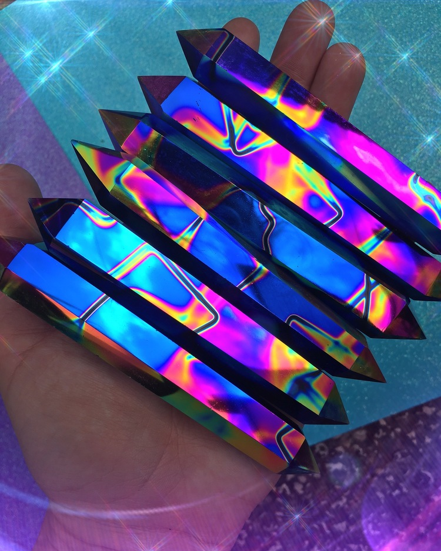
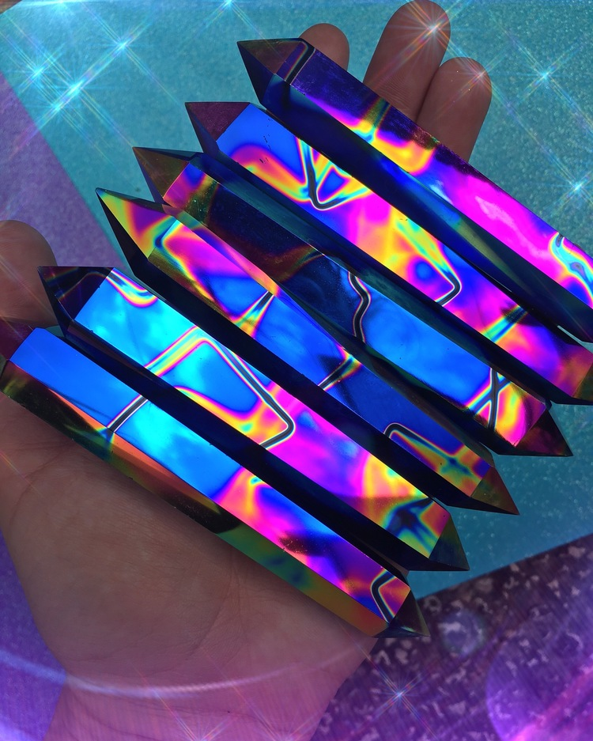
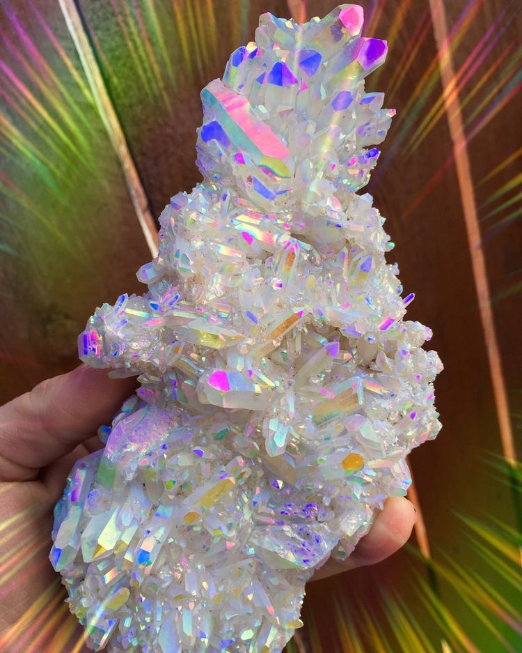

Healing Crystals
Crystal healing is a pseudoscientific alternative medicine technique that employs stones and crystals. Adherents of the technique claim that these have healing powers, although there is no scientific basis for this claim.
Crystal healing is a pseudoscientific alternative medicine technique that employs stones and crystals. Adherents of the technique claim that these have healing powers, although there is no scientific basis for this claim.
Quartz is the second-most-abundant mineral in Earth's continental crust, after feldspar. Its crystal structure is a continuous framework of SiO4 silicon–oxygen tetrahedra, with each oxygen being shared between two tetrahedra, giving an overall chemical formula of SiO2.
